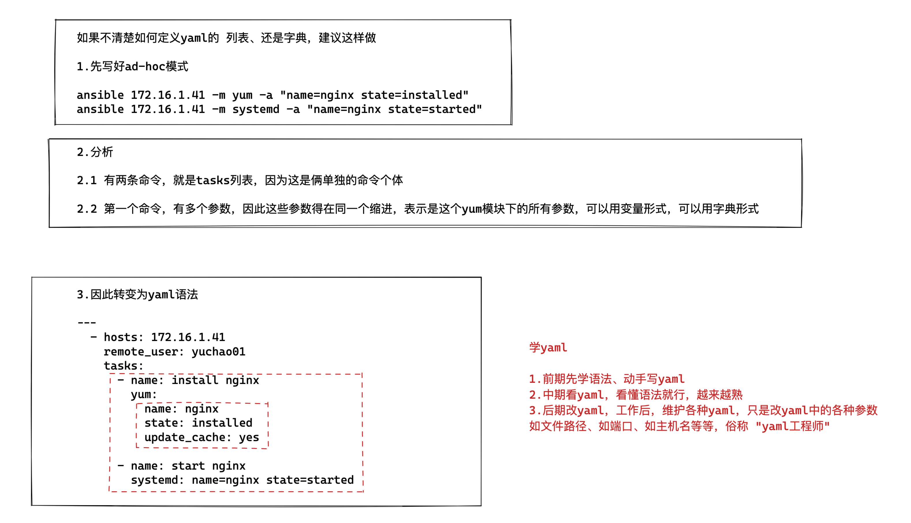
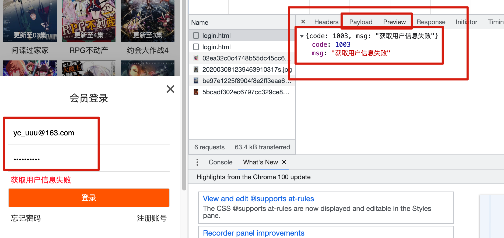
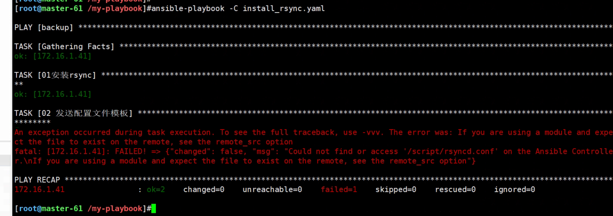

12-Ansible-playbook剧本
ansible临时命令ad-hoc
ansible中有两种模式，分别是ad-hoc模式和playbook模式
ad-hoc简而言之，就是"临时命令"
https://docs.ansible.com/ansible/latest/user_guide/intro_adhoc.html
临时命令非常适合您很少重复的任务。例如，如果您想在圣诞节假期关闭实验室中的所有机器。
Ansible ad hoc 命令使用/usr/bin/ansible命令行工具在一个或多个托管节点上自动执行单个任务。ad hoc 命令既快速又简单，但它们不可重复使用。
ansible-playbook
Ansible Playbooks 提供了一个可重复、可重用、简单的配置管理和多机部署系统，非常适合部署复杂的应用程序。
如果您需要多次使用 Ansible 执行任务，请编写剧本并将其置于源代码控制之下。
如果说ansible 模块 是你车间里的工具，那么playbooks 是你的说明书／使用手册，并且资源清单上的主机是你的原材料。
在ansible 上使用Playbooks是一种完全不同于adhoc的任务执行模式，并且特别强大。
简单地说，playbooks是一个非常简单的配置管理和多机器部署系统的基础，以及非常适合部署复杂应用程序的系统。
Playbooks可以对任务进行编排，就像我们要安装一个程序，写个安装shell脚本一样，在哪一步复制配置文件，最后一步启动服务。
虽然/usr/bin/ansible 可以运行一些临时任务，但是针对复杂的配置，并且可以将配置标准化，并且反复使用，这个时候就需要Playbooks了。
剧本语法
既然要写剧本，就得按照剧本的格式去编写
【比如一个电影剧本】
电影名
演员
场景
时间
事件
台词
道具
ansible剧本，一系列的任务，按照我们期望的结果编排在一起
hosts： 定义主机角色
tasks： 具体执行的任务
例如，于超老师的快乐生活
- 演员列表： 于超,樵夫
场景：
- 场景1： 于超老师开始授课linux
动作1： 头戴麦克风，手拿机械键盘，一顿噼里啪啦疯狂输出
- 场景2： 樵夫老师开始授课python
动作1： 一顿狮吼功，震耳欲聋，讲过的爬虫程序如同蝗虫过境，没讲一次课，就有一个网站崩溃
对比playbook的语法
- hosts： 需要执行的机器,nfs
tasks:
- 任务1：安装nfs
动作： yum install nfs
- 任务2：创建数据目录
动作： mkdir -p xxxx
剧本优势
1.减少重复性的书写命令，例如你在上一节重复性敲打了N次命令
ansible backup -m shell -a "echo 超哥牛逼"
2.剧本更加简洁，容易阅读
3.功能更强大，书写更专业，支持条件判断、循环、变量、标签
4.剧本也就是脚本，可以发到任意机器上，部署任意复杂的程序
5.ansible提供了对剧本语法检查，以及模拟执行
yaml语法
ansible软件的playbook编写需要遵循YAML语法，因此我们得先学一下YAML语法结构
在线json转换yaml
学习yaml技巧
写完yaml，不确定缩进关系对不对，去在线yaml网站，格式化，判断语法是否正常。
yaml特点
1.严格的缩进(空格数)表示层级关系（一般敲2个空格表示一个层级关系）
2.不要使用tab键
3.冒号: 后面一定得有空格
4.短横线- 后面一定得有空格
5.剧本文件名必须是yaml或者yml，程序可以读取，以及vim提供颜色高亮
安装nginx的示例对比
ad-hoc命令模式
[root@m01 ~]# ansible web -m yum -a "name=nginx state=absent"
[root@m01 ~]# ansible web -m shell -a "rpm -qa nginx warn=false"
转变为playbook写法。。。
playbook模式
- 语法的对齐，不得多一个少一个空格
- 输入法保证英文
[root@m01 scripts]# cat nginx.yaml -n
1 # install nginx yaml ,by chaoge
2 - hosts: all
3 tasks:
4 - name: Install nginx Package
5 yum: name=nginx state=present
6 - name: Copy Nginx.conf
7 copy: src=./nginx.conf dest=/etc/nginx/nginx.conf mode=0644
转变为ad-hoc命令模式写法。。。
解释如上的playbook代码，按行解释
1.表示注释信息，可以用#，也可以用 --- 三个短横线
2.定义playbook管理的目标主机，all表示所有的主机，也可以写 主机组名
3.定义playbok所有的任务集合信息，比如该文件，定义了2个任务 ，安装nginx，拷贝nginx配置文件
4.定义了任务的名词，自定义的帮助信息
5.定义任务的具体操作，比如这里用yum模块实现nginx的安装
6.注释信息
7.第六、第七两行作用是使用copy模块，把本地当前的nginx.conf配置文件，分发给其他所有客户端机器，且授权
通过如上的剧本解读，各位兄弟姐妹们应该已经有了点感觉，其实编写剧本并不是特别复杂的事。我们需要注意如下两点：
- 剧本内容组成规范
- 剧本语法规范
playbook组成规范
hosts: 需要执行的机器
tasks: 需要执行的任务
name: 任务名称
刚才说了，剧本就像演员演戏，导演提供的文字资料，因此剧本重要的就是定义演员的信息，演员的任务
而Ansible的剧本也是由最基本的两个部分组成
- hosts定义剧本管理的主机信息（演员有哪些）
- tasks定义被管理的主机需要执行的任务动作（演员需要做什么事）
剧本的hosts部分
定义剧本管理主机信息有一个重要的前提，就是被管理的主机，必须在Ansible主机清单文件中定义
也就是默认的/etc/ansible/hosts，否则剧本无法直接管理对应主机。
定义剧本的hosts部分，可以有如下多种方式，常见的有
# 方式一：定义所管理的主机IP地址
- hosts: 192.168.178.111
tasks:
动作...
# 方式二：定义所管理主机的名字
- hosts: backup01
tasks:
动作...
# 方式三：定义管理主机
- hosts: 192.168.178.111, rsync01
tasks:
动作...
# 方式四：管理所有主机
- hosts: all
tasks:
动作...
其实就和你直接敲打ad-hoc模式一样，前提都是主机清单文件中定义好了
ansible 172.16.1.7 -m shell -a "echo 于超老师带你学linux"
ansible nfs -m shell -a "echo 于超老师带你学linux"
ansible web -m shell -a "echo 于超老师带你学linux"
剧本的tasks部分
其实就等于你敲打的ad-hoc命令模式
1.你准备敲打多少条命令
如三条，也就是三个tasks任务，转变为
ansible web -m shell -a 'echo 超哥牛逼'
ansible web -m yum -a 'name=https state=running'
ansible web -m copy -a 'src=/etc/ansible/hosts dest=/etc/ansible/hosts owner=root group=root mode=0644 '
转变为yaml写法如下
具体模块的参数，如何在yaml中填写，语法有2个
- 变量形式定义task任务
- 字典形式定义任务
# 方式一：采用变量格式设置任务
tasks:
- name: make sure apache is running
service: name=https state=running
# 当传入的参数列表过长时，可以将其分割到多行
tasks:
- name: copy ansible inventory(清单) file to client
copy: src=/etc/ansible/hosts dest=/etc/ansible/hosts
owner=root group=root mode=0644
# 方式二：采用字典格式设置多任务
tasks:
- name: copy ansible inventory file to client
copy:
src: /etc/ansible/hosts
dest: /etc/ansible/hosts
owner: root
group: root
mode: 0644
yaml语法
在学习saltstack过程中，第一要点就是States编写技巧，简称SLS文件。
这个文件遵循YAML语法。初学者看这玩意很容易懵逼，来，于超老师拯救你学习YAML语法
json xml yaml 数据序列化格式
yaml容易被解析，应用于配置文件
salt的配置文件是yaml配置文件，不能用tab
saltstack,k8s,ansible都用的yaml格式配置文件
语法规则
大小写敏感
使用缩进表示层级关系
缩进时禁止tab键，只能空格
缩进的空格数不重要，相同层级的元素左侧对其即可
# 表示注释行
yaml支持的数据结构
对象： 键值对，也称作映射 mapping 哈希hashes 字典 dict 冒号表示 key: value key冒号后必须有
数组： 一组按次序排列的值，又称为序列sequence 列表list 短横线 - list1
纯量： 单个不可再分的值
对象：键值对
yaml
first_key:
second_key: second_value
python
{
'first_key':{
'second_key':'second_value',
}
}
1.安装且运行nginx的palybook示例
练习，自己写一个简单的yaml，安装，启动nginx
---
- hosts: 172.16.1.41
remote_user: root
tasks:
- name: install nginx
yum:
name: nginx
state: installed
update_cache: yes
- name: start nginx
systemd: name=nginx state=started
再写一个停止、删除nginx的yaml
---
- hosts: 172.16.1.41
remote_user: root
tasks:
- name: stop nginx
systemd: name=nginx state=stopped
- name: remove nginx
yum:
name: nginx
state: removed
通过该示例，学习yaml语法格式
---
- hosts: 10.0.0.7,10.0.0.8,10.0.0.9
remote_user: root
pre_tasks:
- name: set epel repo for Centos 7
yum_repository:
name: epel7
description: epel7 on CentOS 7
baseurl: http://mirrors.aliyun.com/epel/7/$basearch/
gpgcheck: no
enabled: True
tasks:
# install nginx and run it
- name: install nginx
yum: name=nginx state=installed update_cache=yes
- name: start nginx
service: name=nginx state=started
post_tasks:
- shell: echo "deploy nginx over"
register: ok_var
- debug: msg="{{ ok_var.stdout }}"
解读yaml
1.yaml以 --- 开头，表示这是一个yaml文件
2. yaml使用# 表示注释符号
3. yaml中的字符串一般不加引号，除非需要引用变量时候
Yaml列表

使用"- "(减号加一个或多个空格)作为列表项，也就是json中的数组。
yaml的列表在playbook中极重要，必须得搞清楚它的写法。
例如高中一班，有男同学，女同学之分
男同学的成员成为一列
女同学的成员成为一列
【yaml数据结构如下】
"男同学":
- 张三
- 樵夫
- 于超
"女同学":
- 花花
- 月月
- 兔兔
列表数据用一个短横杠+空格组成
在playbook中，列表是定义一个局部环境，名字可有可无，表示定义一个范围，范围内的属性都属于该列表。
---
- name: list1 # 列表1，同时给了个名称
hosts: 10.0.0.7 # 指出了hosts是列表1的一个对象
remote_user: root # 列表1的属性
tasks: # 还是列表1的属性
- hosts: 10.0.0.7 # 列表2，但是没有为列表命名，而是直入主题
remote_user: root
sudo: yes
tasks:
要注意的是每一个playbook都必须包含hosts、tasks选项，也就是你剧本，至少得有
- hosts、某个人、某个机器
- tasks、这人要做什么、这机器要做什么
Yaml字典
字典是一个大众读法，也是key: value这种形式的表示形式。
---
- 班级名: 猿来教育linux0224班
人数：
总数: 18
男: 17
女: 1
老师:
名字: 于超
年龄: 18
学习任务: 学习linux、python云计算技术
什么时候写列表、什么时候写字典?

具体到playbook中，一般虚拟性的如定义一个临时的变量数据，一般都是用
key: value形式；而实质性的如找到机器上的一个具体的文件，一般是定义为列表，如多个文件列表（文件列表每一个都是单独的个体）。
---
- hosts: 10.0.0.7 # 列表1，如下都是该列表的各种属性
remote_user: root
vars:
nginx_port: 80 # 定义变量，是虚拟性的内容，应定义为字典而非列表
mysql_port: 3306
vars_files:
- nginx_port.yml # 无法写成key/value格式，且是实体文件，因此定义为列表
tasks:
- name: test2
shell: echo /tmp/a.txt
register: hi_var # register是提取shell的返回值
- debug: var=hi_var.stdout
简单说，字典的语法，一般用于定义变量信息、或者ansible模块的参数
- hosts: chaoge
tasks:
- name: create file
file:
path: /chaoge/666.txt
state: directory
mode: 644
owner: chaoge
group: chaoge
yaml换行写
保证缩进对齐即可
---
- hosts: web
tasks:
- shell: echo 万丈高楼平地起 >> /tmp/t1.log
echo 辉煌只能靠自己 >> /tmp/t1.log
echo 超哥牛逼!! >> /tmp/t1.log
json和yaml语法学习
json特点
JSON (JavaScript Object Notation, JS 对象标记) 是一种轻量级的数据交换格式；
完全独立于编程语言的文本格式来存储和表示数据；
简洁和清晰的层次结构使得 JSON 成为理想的数据交换语言。
易于人阅读和编写，同时也易于机器解析和生成，并有效地提升网络传输效率。
数据传输是我们在敲代码时，经常遇到的一个场景,前后端交互。
给数据一个统一的格式有利于我们编写和解析数据。
json语法
JSON 是一种数据格式。它本身是一串字符串，只是它有固定格式的字符串，符合这个数据格式要求的字符串，我们称之为JSON。
JSON可以和任意编程语言交互，C、golang、java、python等，再转变为编程语言特有的数据类型；
JSON键值对数据结构如上图，以 "{" 开始，以 "}" 结束。中间包裹的为Key : Value的数据结构。
在线格式化json
{
"name":"于超",
"age":18,
"hobby":[
"linux",
"python",
"music"
]
}
json数据类型
关于json咱们目前还不会去主动操作它，只需要看懂就行，比如命令的执行结果，是json格式的。
json语法规则
JSON 语法是 JavaScript 对象表示语法的子集。
数据在名称/值对中
数据由逗号分隔
大括号 {} 保存字典
中括号 [] 保存列表
键值对（字典）
JSON 数据的书写格式是：
key : value
{
"name":"超哥linux"
}
json值
json的值也就是value、可以是如下的数据类型
JSON 值可以是：
- 数字（整数或浮点数）
- 字符串（在双引号中）
- 逻辑值（true 或 false）
- 列表（在中括号中）
- 键值对（在大括号中）
- null
数字类型
{
"age":18
}
键值类型
可以有多个键值对，也可以嵌套
{
"name":"超哥linux",
"hoboy":{
"study":"linux,python",
"play":[
"movie",
"music"
]
}
}
列表
列表就是包裹了多个数据，json支持复杂的数据嵌套，通过这样的层级关系，可以很轻松的提取数据。
{
"name":"超哥linux",
"hoboy":{
"study":"linux,python",
"play":[
"movie",
"music"
],
"friends":[
{
"name":"樵夫",
"age":30
},
{
"name":"张三丰",
"age":500
}
]
}
}
布尔值
json的布尔值可以是真假值
{
"name":"灰太狼",
"female":false,
"是否能抓到羊":false,
"怕老婆":true
}
空值
{
"name":"灰太狼",
"female":false,
"是否能抓到羊":false,
"怕老婆":true,
"是否单身":null
}
json实际应用
账号密码传输
{
"username":"yc_uuu@163.com",
"password":"chaoge666"
}
json用在哪，网站的前后端数据传递，都是json格式
https://www.acgvod.com/
前面说了 JSON 是轻量级的文本数据交换格式，由于各个语言都支持 JSON
JSON 又支持各种数据类型，所以JSON常用于我们日常的 HTTP 交互、数据存储等。

天气API接口（json数据）
http://www.tianqiapi.com/api?version=v9&appid=23035354&appsecret=8YvlPNrz
部分数据
{
"cityid":"101010100",
"city":"北京",
"cityEn":"beijing",
"country":"中国",
"countryEn":"China",
"update_time":"2022-04-26 15:54:16",
"alarm":{
"alarm_type":"大风",
"alarm_level":"蓝色",
"alarm_title":"北京市发布大风蓝色预警",
"alarm_content":"市气象台2022年4月25日16时10分发布大风蓝色预警信号：预计，26日02时至22时，本市大部分地区有5级左右偏北风，阵风7、8级，山区可达9级，并伴有沙尘，请注意防范。（预警信息来源：国家预警信息发布中心）"
}
}
cityid: '101010100'
city: 北京
cityEn: beijing
country: 中国
countryEn: China
update_time: '2022-04-26 15:54:16'
alarm:
alarm_type: 大风
alarm_level: 蓝色
alarm_title: 北京市发布大风蓝色预警
alarm_content: >-
市气象台2022年4月25日16时10分发布大风蓝色预警信号：预计，26日02时至22时，本市大部分地区有5级左右偏北风，阵风7、8级，山区可达9级，并伴有沙尘，请注意防范。（预警信息来源：国家预警信息发布中心）
ansible命令结果转为json格式
1.修改配置文件
[defaults]
stdout_callback = json
bin_ansible_callbacks = True
2.后续ansible命令执行结果，以json形式返回
[root@master-61 ~]#ansible backup -a 'hostname'
安装jq命令
jq 是一款命令行下处理 JSON 数据的工具。
其可以接受标准输入，命令管道或者文件中的 JSON 数据，经过一系列的过滤器(filters)和表达式的转后形成我们需要的数据结构并将结果输出到标准输出中。
jq命令可以格式化显示json信息
yum install jq -y
使用jq命令，得用jq支持的语法来提取key、value；
- 通过点
.作为表达式，提取key。 通过逗号
,，写多个提取表达式通过管道符
|串行执行，多层次提取
简单的json数据提取
[root@master-61 ~]#
[root@master-61 ~]#echo '{"name":"yuchao"}' | jq
{
"name": "yuchao"
}
[root@master-61 ~]#echo '{"name":"yuchao"}' | jq '.'
{
"name": "yuchao"
}
[root@master-61 ~]#echo '{"name":"yuchao"}' | jq '.name'
"yuchao"
多个值提取
必须符合json的数据类型要求
[root@master-61 ~]#echo '{"name":"yuchao","age":18,"male":"True"}' | jq '.name , .age, .male'
"yuchao"
18
"True"
[root@master-61 ~]#
[root@master-61 ~]#echo '{"name":"yuchao","age":18,"male":true}' | jq '.name , .age, .male'
"yuchao"
18
true
[root@master-61 ~]#echo '{"name":"yuchao","age":18,"male":false}' | jq '.name , .age, .male'
"yuchao"
18
false
串行执行（jq提供的管道符）
也就是字典套字典；
列表套字典；一层层嵌套，一层层拆，提取数据；
[root@master-61 ~]#echo '{"students":[{"name":"于超","age":18},{"name":"狗蛋","female":true},{"name":"三胖","address":"朝鲜"}]}'|jq
{
"students": [
{
"name": "于超",
"age": 18
},
{
"name": "狗蛋",
"female": true
},
{
"name": "三胖",
"address": "朝鲜"
}
]
}
# 一层层拆，先拆外面的字典
[root@master-61 ~]#echo '{"students":[{"name":"于超","age":18},{"name":"狗蛋","female":true},{"name":"三胖","address":"朝鲜"}]}'|jq '.students'
# 拆列表（默认提取所有列表数据）
[root@master-61 ~]#echo '{"students":[{"name":"于超","age":18},{"name":"狗蛋","female":true},{"name":"三胖","address":"朝鲜"}]}'|jq '.students | .[]'
# 提取字典数据（根据上一层提取列表数据的数量找）
[root@master-61 ~]#echo '{"students":[{"name":"于超","age":18},{"name":"狗蛋","female":true},{"name":"三胖","address":"朝鲜"}]}'|jq '.students | .[] | .name'
"于超"
"狗蛋"
"三胖"
指定列表序号
列表序号默认从0开始，依次增长
[root@master-61 ~]#echo '{"students":[{"name":"于超","age":18},{"name":"狗蛋","female":true},{"name":"三胖","address":"朝鲜"}]}'|jq '.students | .[0] '
[root@master-61 ~]#echo '{"students":[{"name":"于超","age":18},{"name":"狗蛋","female":true},{"name":"三胖","address":"朝鲜"}]}'|jq '.students | .[1] '
[root@master-61 ~]#echo '{"students":[{"name":"于超","age":18},{"name":"狗蛋","female":true},{"name":"三胖","address":"朝鲜"}]}'|jq '.students | .[2] '
提取出朝鲜的值
[root@master-61 ~]#echo '{"students":[{"name":"于超","age":18},{"name":"狗蛋","female":true},{"name":"三胖","address":"朝鲜"}]}'|jq '.students | .[2] | .address '
"朝鲜"
练习（提取天气json数据）
http://www.tianqiapi.com/api?version=v9&appid=23035354&appsecret=8YvlPNrz
提取
1.北京
[root@master-61 ~]#cat tianqi.json |jq '.city'
2.China
[root@master-61 ~]#cat tianqi.json |jq '.countryEn'
3. 11号的天气数据
[root@master-61 ~]#cat tianqi.json |jq '.data| .[3] '
4. 11号的天气数据，紫外线情况
[root@master-61 ~]#cat tianqi.json |jq '.data| .[3] | .index'
5. 8号的空气指数（air_tips）
[root@master-61 ~]#cat tianqi.json |jq '.data | .[0]|.air_tips'
大练习-json和yaml互相转化
1.手写yaml
手写，把如下json数据，转变为yaml格式
表示下0224班级的老师、学员情况
json数据如下
[
{
"0224": {
"老师": "于超",
"学生们": [
{
"黄彦": [
{
"年龄": 23,
"地址": "深圳"
}
],
"陈亮亮": [
{
"年龄": 24,
"地址": "广州"
}
],
"罗兴林": [
{
"年龄": 26,
"地址": "贵州"
}
]
}
]
}
}
]
手写，转化为yaml
使用https://oktools.net/json2yaml 该网站验证转化结果是否正确
2.练习jq命令
1.提取出 于超
2.提取出学生列表
3.提取出罗兴林的资料
4.提取出陈亮亮的资料
5.提取出黄彦的地址
6.提取出罗兴林的年龄
实战rsync剧本开发
先写好ad-hoc模式（服务端）
然后再转换为playbook即可，这样有个参考，简单点。
# 1.安装rsync
ansible backup -m yum -a 'name=rsync state=installed'
# 2.发送配置文件模板、以及密码文件
ansible backup -m copy -a 'src=/script/rsyncd.conf dest=/etc/rsyncd.conf'
ansible backup -m copy -a 'src=/script/rsync.passwd dest=/etc/rsync.passwd mode=600'
# 3.创建用户、组信息
ansible backup -m group -a 'name=www gid=1000'
ansible backup -m user -a 'name=www uid=1000 group=www create_home=no shell=/sbin/nologin'
# 4.备份目录创建与授权
ansible backup -m file -a 'path=/backup owner=www group=www mode=755 state=directory '
ansible backup -m file -a 'path=/data owner=www group=www mode=755 state=directory'
# 5.启动服务，设置开机自启
ansible backup -m systemd -a 'name=rsyncd state=started enabled=yes'
改造为playbook剧本
可以参考官网写法
https://docs.ansible.com/ansible/latest/user_guide/playbooks_intro.html#playbook-execution
其实写法很简单，批量改造就完事了，等于号赋值操作，改写为冒号形式。
建议别用中文
- hosts: backup
tasks:
- name: 01安装rsync
yum:
name: rsync
state: installed
- name: 02 发送配置文件模板
copy:
src: /script/rsyncd.conf
dest: /etc/rsyncd.conf
- name: 02 发送密码文件
copy:
src: /script/rsync.passwd
dest: /etc/rsync.passwd
mode: '600'
- name: 03 创建www用户组
group:
name: www
gid: 1000
- name: 04 创建www用户
user:
name: www
uid: 1000
group: www
create_home: no
shell: /sbin/nologin
- name: 05 备份目录创建与授权/data
file:
path: /data
state: directory
owner: www
group: www
mode: '755'
- name: 06 备份目录创建与授权/backup
file:
path: /backup
state: directory
owner: www
group: www
mode: '755'
- name: 07 启动服务
systemd:
name: rsyncd
state: started
enabled: yes
测试palybook执行
剧本编写完毕后，得执行才能开始工作。
在Ansible程序里，加载模块的功能可以直接用ansible命令操作（ad-hoc）
加载剧本中的功能，可以使用ansible-playbook命令（playbook）
添加-C参数，可以模拟剧本的执行，但是不会产生实际改变
[root@master-61 /my-playbook]#ansible-playbook -C install_rsync.yaml
注意别忘记，剧本中需要的配置文化，你得提前准备好
（就好比你要拍一部枪战片，电源都开拍了，你连道具枪还没准备好）

剧本执行过程中会产生响应的输出，根据输出的信息可以掌握剧本是否正确执行，根据输出的措施信息，可以掌握剧本中编写的逻辑错误。
当本地执行了任务，会得到返回值changed
如果不需要执行了，得到返回值ok
创建rsync配置文件，密码文件
注意是master-61机器
[root@master-61 /my-playbook]#cat /script/rsyncd.conf
uid = www
gid = www
port = 873
fake super = yes
use chroot = no
max connections = 200
timeout = 600
ignore errors
read only = false
list = false
auth users = rsync_backup
secrets file = /etc/rsync.passwd
log file = /var/log/rsyncd.log
[backup]
comment = chaoge rsync backup!
path = /backup
[data]
comment = yuchaoit.cn rsync!
path = /data
密码文件
[root@master-61 /my-playbook]#cat /script/rsync.passwd
rsync_backup:yuchao666
再次测试执行
[root@master-61 /my-playbook]#ansible-playbook -C install_rsync.yaml
结果
PLAY RECAP ************************************************************************************************************************
172.16.1.41 : ok=9 changed=7 unreachable=0 failed=0 skipped=0 rescued=0 ignored=0
实质性执行playbook
[root@master-61 /my-playbook]#ansible-playbook install_rsync.yaml
检查rsyncd部署情况（必须验证你的部署情况）
[root@master-61 /my-playbook]#ansible backup -a "ls -l /etc/rsync.passwd"
172.16.1.41 | CHANGED | rc=0 >>
-rw------- 1 root root 23 Apr 26 17:05 /etc/rsync.passwd
[root@master-61 /my-playbook]#ansible backup -a "cat /etc/rsync.passwd"
172.16.1.41 | CHANGED | rc=0 >>
rsync_backup:yuchao666
[root@master-61 /my-playbook]#ansible backup -a "systemctl status rsyncd"
测试rsync是否可用
[root@master-61 /my-playbook]#export RSYNC_PASSWORD=yuchao666
[root@master-61 /my-playbook]#rsync -avzp /tmp/chaoge.log rsync_backup@rsync-41::data
[root@master-61 /my-playbook]#ansible backup -a "ls /data"
172.16.1.41 | CHANGED | rc=0 >>
chaoge.log
实战NFS剧本开发
1.先写好ad-hoc模式部署nfs
基于ad-hoc转换为playbook更不容易出错，建议你这样去转化
# 1.安装nfs-utils rpcbind服务
ansible nfs -m yum -a "name=nfs-utils state=installed"
ansible nfs -m yum -a "name=rpcbind state=installed"
# 2.创建nfs限定的用户、组
ansible nfs -m group -a "name=www gid=1000"
ansible nfs -m user -a 'name=www uid=1000 group=www create_home=no shell=/sbin/nologin'
# 3.创建共享目录
ansible nfs -m file -a 'path=/data owner=www group=www state=directory'
# 4.拷贝配置文件，发给nfs机器
ansible nfs -m copy -a 'src=/script/exports dest=/etc/exports'
# 5.启动nfs服务，设置开机自启
ansible nfs -m systemd -a 'name=nfs state=started enabled=yes'
2.创建nfs配置文件
在master-61机器
[root@master-61 ~]#cat /script/exports
/data 172.16.1.0/24(rw,sync,all_squash,anonuid=1000,anongid=1000)
3.改造playbook（变量风格）nfs服务端
- hosts: nfs
tasks:
- name: 01 安装nfs-utils 服务
yum: name=nfs-utils state=installed
- name: 02 安装rpcbind 服务
yum: name=rpcbind state=installed
- name: 03 创建组
group: name=www gid=1000
- name: 04 创建用户
user: name=www uid=1000 group=www create_home=no shell=/sbin/nologin
- name: 05 创建共享目录
file: path=/data owner=www group=www state=directory
- name: 06 拷贝配置文件
copy: src=/script/exports dest=/etc/exports
- name: 07 启动nfs
systemd: name=nfs state=started enabled=yes
4.web789客户端playbook
部署nginx运行环境
[root@master-61 /script]#cat nginx.conf
user www www;
worker_processes auto;
worker_rlimit_nofile 65535;
events{
use epoll;
worker_connections 65535;
}
http{
include mime.types;
default_type application/octet-stream;
charset utf-8;
server{
listen 80;
server_name localhost;
root /usr/share/nginx/html;
location / {
index index.html;
}
}
}
playbook
- hosts: web
tasks:
- name: 01 install nginx
yum: name=nginx state=installed
- name: 02 add group
group: name=www gid=1000
- name: 03 add www user
user: name=www uid=1000 group=www create_home=no shell=/sbin/nologin
- name: 04 copy nginx.conf
copy: src=/script/nginx.conf dest=/etc/nginx/nginx.conf
- name: 05 start nginx
systemd: name=nginx state=restarted enabled=yes
执行剧本
[root@master-61 /script]#ansible-playbook install_nginx.yaml
测试结果
[root@master-61 /script]#ansible web -m shell -a "ss -tunlp|grep nginx"
172.16.1.9 | CHANGED | rc=0 >>
tcp LISTEN 0 128 *:80 *:* users:(("nginx",pid=37661,fd=6),("nginx",pid=37658,fd=6))
172.16.1.8 | CHANGED | rc=0 >>
tcp LISTEN 0 128 *:80 *:* users:(("nginx",pid=8007,fd=6),("nginx",pid=8004,fd=6))
172.16.1.7 | CHANGED | rc=0 >>
tcp LISTEN 0 128 *:80 *:* users:(("nginx",pid=12210,fd=6),("nginx",pid=12207,fd=6))
5.web789挂载nfs
关于用户、组、已经存在了就别创建了
- hosts: web
tasks:
- name: 01 安装nfs-utils 服务
yum: name=nfs-utils state=installed
- name: 02 安装rpcbind 服务
yum: name=rpcbind state=installed
- name: 05 启动rpcbind服务
systemd: name=rpcbind state=started enabled=yes
- name: 06 挂载nfs
mount: src=172.16.1.31:/data path=/usr/share/nginx/html fstype=nfs opts=defaults state=mounted
测试执行
[root@master-61 /script]#ansible-playbook mount_nfs_web.yaml
在共享存储中，创建测试数据
[root@nfs-31 /data]#vim index.html
[root@nfs-31 /data]#chown -R www.www index.html
[root@nfs-31 /data]#
测试访问nginx
[root@master-61 /script]#curl 10.0.0.7
<meta charset=utf-8>
于超老师带你学ansible
[root@master-61 /script]#curl 10.0.0.8
<meta charset=utf-8>
于超老师带你学ansible
[root@master-61 /script]#curl 10.0.0.9
<meta charset=utf-8>
于超老师带你学ansible
给nfs服务端添加实时同步lsyncd
依旧是先写好ad-hoc模式
ansible nfs -m yum -a 'name=lsyncd state=installed'
ansible nfs -m group -a 'name=www gid=1000'
ansible nfs -m user -a 'name=www uid=1000 group=www create_home=no shell=/sbin/nologin'
ansible nfs -m copy -a 'src=/script/lsyncd.conf dest=/etc/lsyncd.conf'
ansible nfs -m copy -a 'src=/script/lsyncd.passwd dest=/etc/lsyncd.passwd mode=600'
ansible nfs -m systemd -a 'name=lsyncd state=started'
配置文件
settings {
logfile ="/var/log/lsyncd/lsyncd.log",
statusFile ="/var/log/lsyncd/lsyncd.status",
inotifyMode = "CloseWrite",
maxProcesses = 8,
}
sync {
default.rsync,
source = "/data",
target = "rsync_backup@172.16.1.41::data",
delete= true,
exclude = {".*"},
delay=1,
rsync = {
binary = "/usr/bin/rsync",
archive = true,
compress = true,
verbose = true,
password_file="/etc/lsyncd.passwd",
_extra={"--bwlimit=200"}
}
}
密码文件
[root@master-61 /script]#cat /script/lsyncd.passwd
yuchao666
改造playbook（两种语法风格、字典形式、变量形式）
www用户、组有了就别创建了
- hosts: nfs
tasks:
- name: 01 install lsyncd
yum: name=lsyncd state=installed
- name: 04 copy lsyncd.conf
copy: src=/script/lsyncd.conf dest=/etc/lsyncd.conf
- name: 05 copy lsync.password
copy: src=/script/lsyncd.passwd dest=/etc/lsyncd.passwd mode=600
- name: 06 start lsyncd services
systemd: name=lsyncd state=started
测试剧本
[root@master-61 /script]#ansible-playbook -C install_lsyncd.yaml
执行剧本，查看实时同步结果
[root@master-61 /script]#ansible-playbook install_lsyncd.yaml
创建客户端测试数据
[root@master-61 /script]#ansible web -m shell -a "touch /usr/share/nginx/html/t{1..10}.png"
查看实时同步的数据
[root@master-61 /script]#ansible backup -a "ls /data"